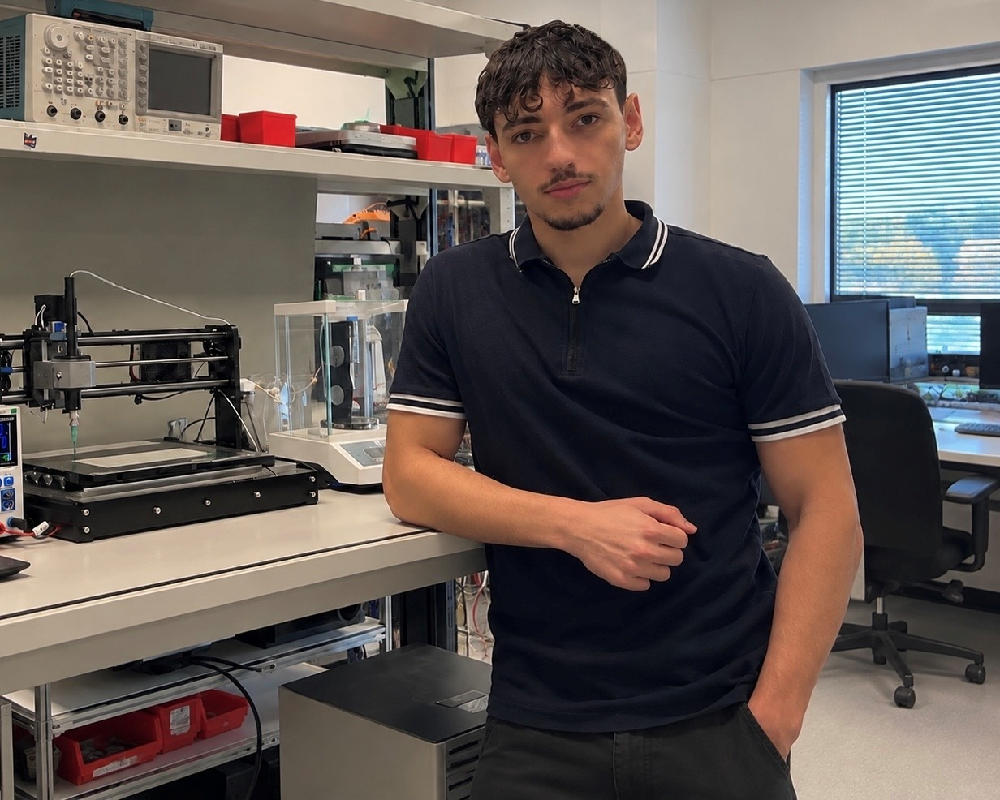

Julian Buscher
Mechatronik-StudentMechatronics student
Praxiserfahrung aus Praktika und eigenen Projekten — von der CAD-Konstruktion über den Aufbau bis zur Inbetriebnahme.
Hands-on experience from internships and my own projects — from CAD design through assembly to commissioning.
Lebenslauf ansehenView CVProjekteProjects

Über michAbout me

Ich bin im Bachelorstudium Mechatronik an der Universität Innsbruck und der UMIT TIROL und baue am liebsten Hardware, die im echten Einsatz funktioniert.I am in the bachelor’s programme in mechatronics at the University of Innsbruck and UMIT TIROL and most enjoy building hardware that works in real use.
Neben dem Studium entwickle ich eigene Projekte und bin im Formula-Student-Team Campus Tirol Motorsport aktiv.Alongside my studies I develop my own projects and am part of the Formula Student team Campus Tirol Motorsport.
Bei EMBL Heidelberg habe ich erlebt, wie Entwicklung im professionellen Umfeld abläuft, und genau davon will ich mehr. Deshalb suche ich gezielt nach neuen Praktika.At EMBL Heidelberg I saw how development works in a professional setting, and I want more of exactly that. So I am actively looking for new internships.
PraxiserfahrungExperience
AusbildungEducation
Student TeamStudent Team
- Entwicklung, Aufbau und Testing der Fahrzeugelektronik im interdisziplinären UmfeldDevelopment, assembly and testing of the vehicle electronics in an interdisciplinary environment
- Entwurf von Platinen, Auslegung des Kabelbaums sowie Programmierung von MikrocontrollernDesign of PCBs, wiring harness layout and microcontroller programming
KenntnisseSkills
AktuellCurrently
Ich suche ein Praktikum für Sommer 2027 in Entwicklung, Prototyping oder Automatisierung, am liebsten dort, wo Mechanik, Elektronik und Software zusammenkommen. Ich studiere in Innsbruck und bin in den Semesterferien oft zu Hause in Heidelberg.I am looking for an internship in summer 2027 in development, prototyping or automation, ideally where mechanics, electronics and software come together. I study in Innsbruck and am based in Heidelberg, so I am available in the Rhine-Neckar region without relocating. Innsbruck and the surrounding area work just as well.